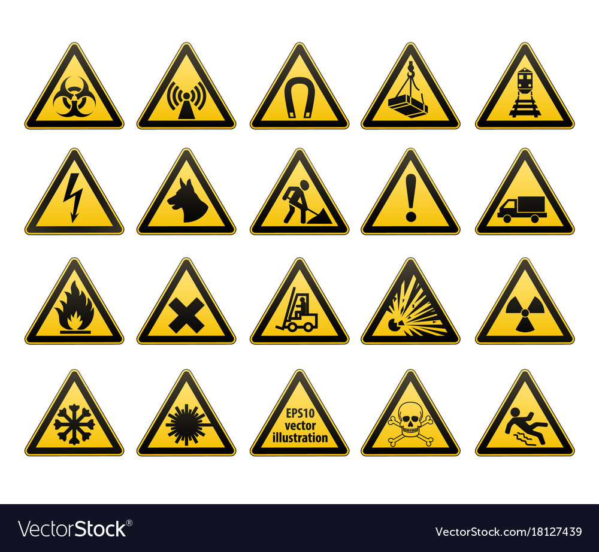

Safety in the Fablab
The Fablab in Singapore Polytechnic has a large number of tools, equipment and machinery which we can use to fabricate our project. As part of this module we would need to use the Fablab for our projects and thus we will be taught on how to operate the different machinery, tools and equipments
General safety rules and regulations of the Fablab
Things to note before entering the lab
- Firstly, we are not allowed to enter and work in any laboratory or workshop in the absence of the lecturer-in-charge or Technical Supporting Officer.
- It is also very important that we are always properly attired before entering the lab
|  | These are some common safety warning placard you will notice on the machines in the fablab |
In the case of an emergency, assistance may be summoned
- For Ambulance call 995
- For SCDF call 995
- For Police call 999
- For all emergencies and incident reporting call SP Emergency hotline 6772-1234